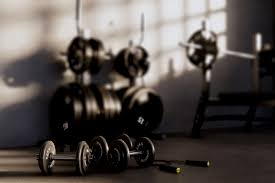

I have been playing videogames since I was 9. My first game was actually my psp. Currently I am only playing
league of legends on and off but trying to limit my video games habit so I am able to do other hobbies.
Still nothing beats a nice 1 hour session of gamming at the ends of the day

Cross Country were one of those sports I picked up to be active on the side with school. However, I quickly
fell in love with the sport at began to compete in marathons and short 3 mile competetions. Ever since I finished
High School I still practice running every now. A peaveful sport with great reward

So as I mentioned I did Cross Countery for about 4 years and after graduating High School I saw the need to change
the way I looked. All the running had made my body skinnier so I decided to lift and gain some weight. Now I gained too
much wait and you can blame it on me bulking. Either way I would say that the gym would be my second home.